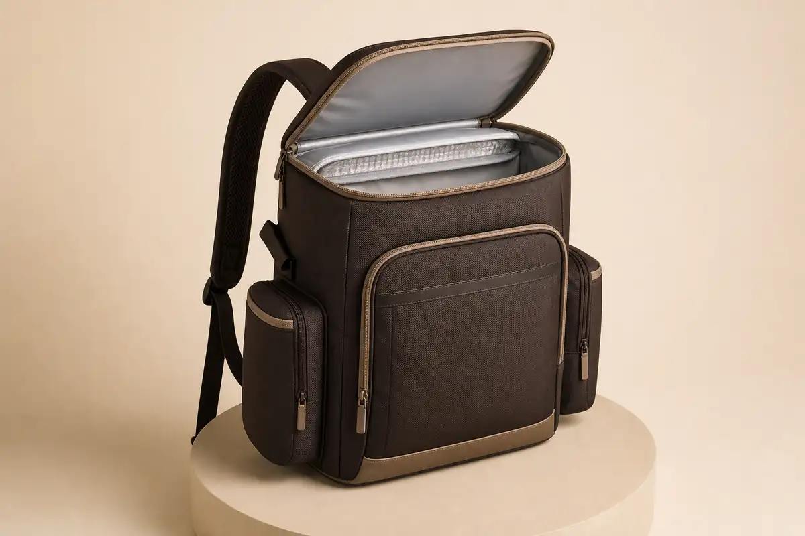

PEVA-Style Lining
A cleanable PEVA lining direction can be paired with suitable seam construction and an insulation layer.
Insulated Outdoor Development
OEM/ODM concept for padel events, outdoor programs, picnics and hotel projects with a PEVA-style lining, insulation layer, dry/wet organization and a comfortable carry system.

Functional Structure
Capacity, compartment ratio and insulation direction are developed around the buyer's intended contents, environment and price point.
A cleanable PEVA lining direction can be paired with suitable seam construction and an insulation layer.
Separate organizer and side-pocket directions keep dry essentials apart from the insulated main compartment.
Padded shoulder straps, breathable back panels and balanced load placement are refined during sampling.
B2B Applications
Branded refreshment carry for clubs, tournaments and sponsor activations.
Day-trip and activity programs needing hands-free insulated storage.
Retail and lifestyle collections with organized dry accessories.
Resort excursions, guest amenities and hospitality gifting programs.
OEM/ODM & MOQ
MOQ depends on outer material, PEVA-style lining, insulation, size, color, logo and packaging. Cooling duration and complete leakproof performance are not promised without an agreed test method and validated sample.
Quality Control
Outer fabric, lining, insulation, color and approved hand feel are checked.
Lining fit, insulation placement, binding and seam workmanship are reviewed against the sample.
Zippers, pockets, straps, adjusters and the loaded carry direction are checked.
Logo placement, labels, packaging and carton marks follow confirmed requirements.
FAQ
MOQ depends on outer material, lining, insulation, size, color, logo and packaging. Share your target quantity for review.
We do not make an untested duration claim. Results vary with construction, contents, ambient conditions and use, so a claim requires an agreed test.
Complete leakproof performance is not promised without validated construction and testing. We can discuss lining and seam directions for the target use.
Yes. Colors, logo method, labels, compartment mix and packaging can be developed for event, club or hospitality programs.
Send capacity, intended contents, target market, quantity, material direction and branding brief.